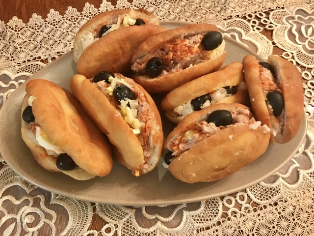

Tunisian Fricassee

Description
There are two ways to shape the Tunisian Fricassee. You can form small balls of dough, then flatten each ball into a thin disc. Gently stretch the disc of dough to give it an oval shape.
Another way to shape the Fricassee is the one shown in the picture below. Flatten the dough with a rolling pin, then use a round cookie cutter to cut out smalls discs of dough. Gently stretch each disc to give it an oval shape.
Ingredients
4 cups all purpose flour
1 egg
3 tbsp olive oil
1 tsp salt
1 tsp sugar
1 tbsp yeast
10 to 11 oz warm water
Vegetable or canola oil for frying the Fricassee
2 cans Tuna in oil
4 boiled eggs
1 cup Black olives
6 greens onions
2 large potatoes
About 1/4 cup capers
Salt to taste
Olive oil
Steps
Spread harissa and preserved lemon sauce
if using, on one half of bread
Top with potatoes,tuna,hard boiled eggs,pickles and olives
Drizzle with tahini